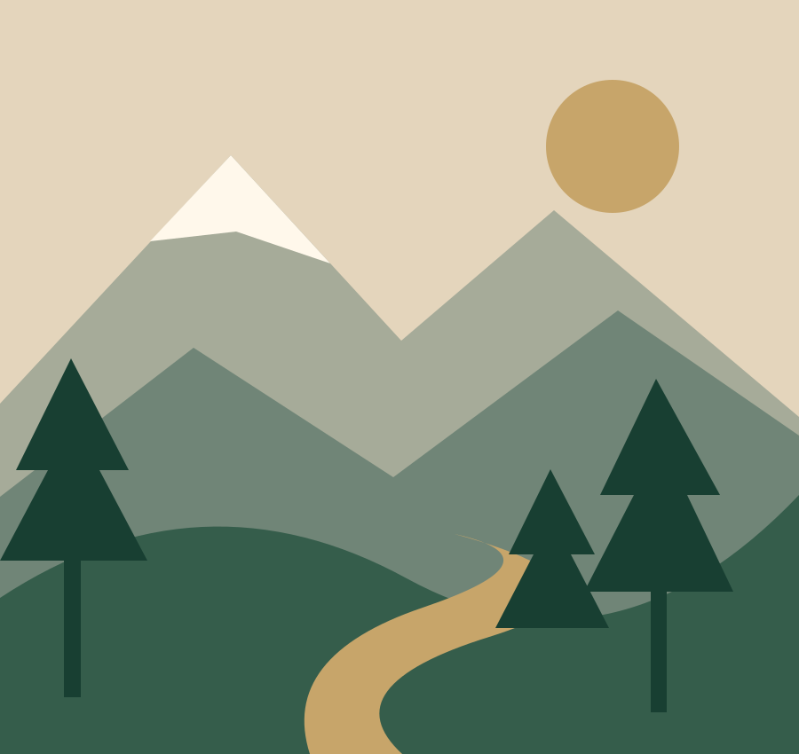

Faire découvrir les richesses du Moyen Atlas, en donnant une place centrale à celles et ceux qui les façonnent.

Commencer près des savoir-faire.
Le Moyen Atlas est notre territoire initial. Notre mission est de valoriser les coopératives et artisans à travers des présentations lisibles, soignées et fidèles à leur activité.
Le projet joue d’abord un rôle de vitrine et de mise en relation. Il progresse par étapes, au fil des échanges et des accords. Il ne s’agit pas encore d’une marketplace opérationnelle.
Présenter avec justesse
L’origine, les caractéristiques et les visuels de chaque produit devront être confirmés avec son producteur. Aucun nom de partenaire, témoignage ou certification n’est annoncé sans vérification et accord.
TRANSPARENCE
Une vitrine claire sur son état actuel.
Les trois produits présentés sont exclusivement des exemples de démonstration, non disponibles à la vente. Les prix, stocks, producteurs et caractéristiques restent à confirmer.
Visuels et crédits
Les illustrations de paysage, miel, tapis, ghassoul et l’emblème ont été créés pour cette version du projet. Elles ne représentent ni un produit réel ni une coopérative identifiée. Aucune photographie de tiers n’est utilisée.
Contact et confidentialité
Le site ne comporte ni formulaire, ni compte, ni outil de suivi d’audience. Les liens WhatsApp et email ouvrent le service de votre choix ; leurs règles de confidentialité s’appliquent lorsque vous les utilisez.